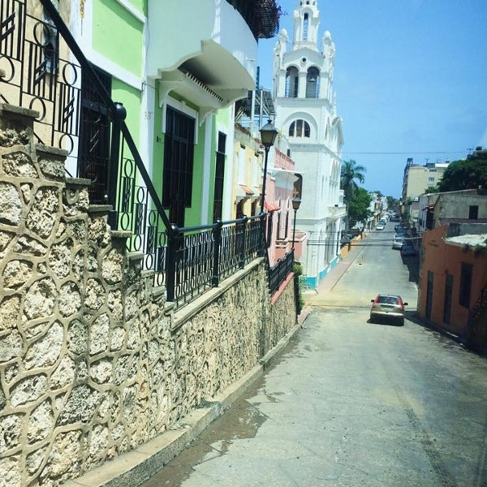
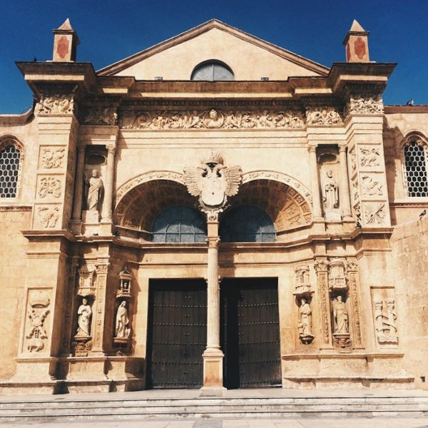
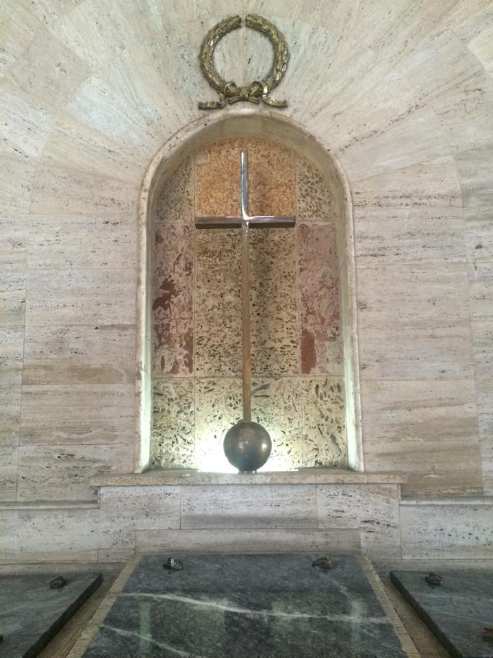
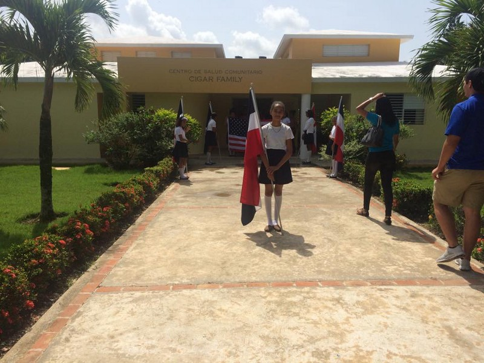
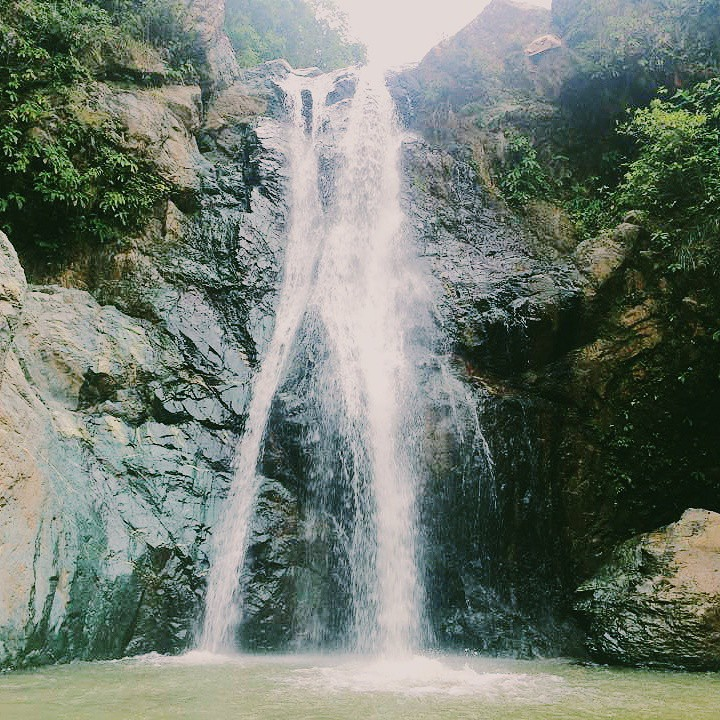
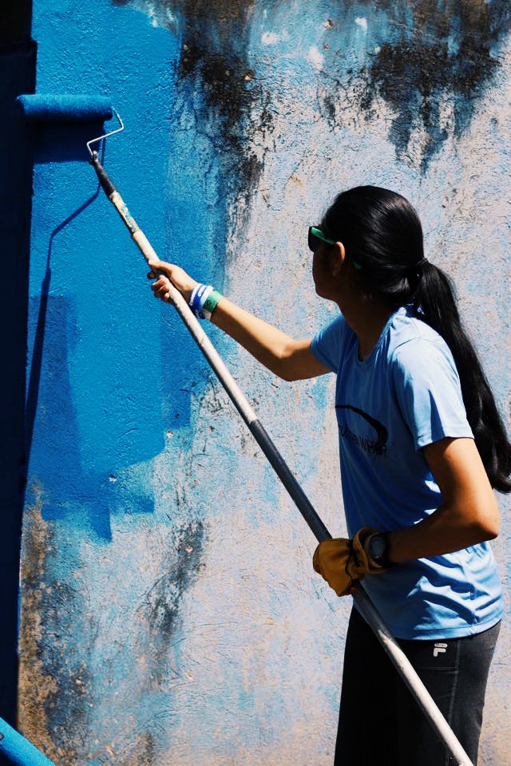
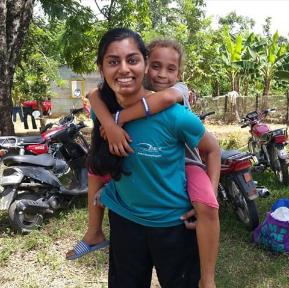
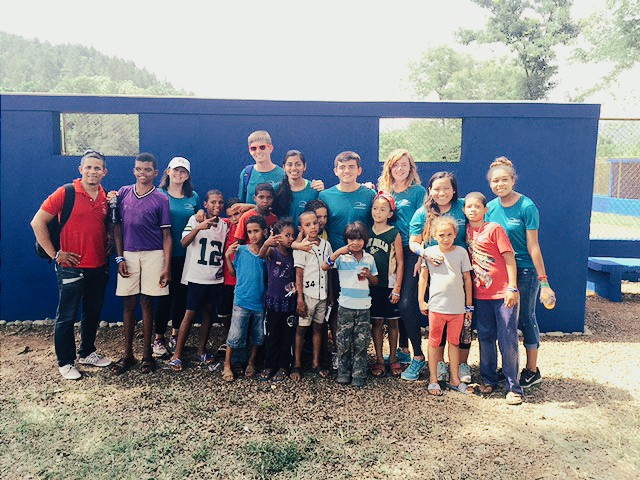
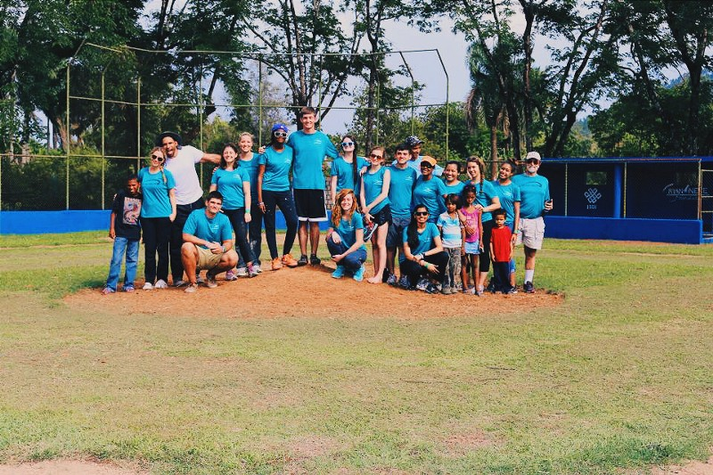

A New* Worldview — Through Service
DominiCANT Believe It’s Over
*The title of this should've been a Nhu Worldview, because of the puns made on this trip, but for it to make sense to others, I opted to keep it like it is.
I just returned from a trip to the Dominican Republic. I've changed as a person through the experience, gaining a new perspective on the world and its people. I went with the Ryan Nece Foundation (@powerofgiving) as a part of the Student Service Program, and I am so thankful that I got this opportunity. With 11 other rising seniors, who I can now call some of my best friends, I learned and experienced some valuable things.
Day 1: Cultural Exchange
On the first day, we were introduced to the culture and history of Santo Domingo. The first city of the New World, it was beautiful, historical, and culturally rich. We took a walking tour of the old city and I, of course, took lots of pictures.


Street view (left) and the first Cathedral built in the New World (right)
Knowing some European and American history (AP Euro and APUSH), I was able to make quite a few connections as to what the tour guide told us about the landmarks, events, and culture. The architecture was very European, the culture leaned heavily toward Catholicism, and their heroes were honored.

Inside a non-congregational church, which is now used as a hall where national heroes are buried.
Later in the day, we drove away from the old city. A lot of the sights in modern Santo Domingo reminded me of India, where my parents are from. From my very first impression — honking and unruly roads — to the income inequality evident as we moved inland, I realized how elite the US is, and how similar the plights of the developing world are. Even in vehicles, scooters and motorcycles were very common, just as in India. Stray dogs, the style of homes, even, all reminded me of India. The street vendors, although more common in India, were present here too. Yet, culturally, Dominicans were very different: the dominance of a single religion, the food, the aura of the people. Everyone we interacted with seemed kind, and offered everything they could to help us. The tour guides all told us that we were welcome anytime; Santo Domingo was our second home.
This hospitality I experienced was very new — it’s not something I would ever hear here in the states. (Oh yeah, that too. Everyone called the US “the states.”) It was nice to feel their cultural warmth towards guests.
Day 2: Visiting the Cigar Family Complex
This kindness only continued to present itself throughout our trip. The Cigar Family Complex in Bonao includes a school and a clinic. It serves 5 communities, and gives the local children the opportunity to get an education, play organized sports, and receive medical attention. Without the Cigar Family, they would have to travel over an hour to get to the nearest school, so most would not go. The Cigar Family is actually based in Tampa, and they started and fund the school/clinic.
We spent the day mostly interacting with the local kids. Their excitement was evident; even though it was summer vacation, they congregated to entertain us through singing, dancing, and a martial arts demonstration. Afterwards, we donated some supplies we had collected through a supply drive conducted in Tampa (hygiene, school supplies, medical supplies). Individually, all the students, teachers, and staff came up and chose an item. Being able to help them with their daily lives, especially after passing through their village and seeing their dilapidated living conditions, was very fulfilling. We donated the remaining items to the clinic and school for communal use. I didn’t realize it before, but upon reflecting on the experience I found that developing countries are actually very similar.

The students welcoming us into their school.
We played kickball with the kids, and their smiles were so fulfilling. Playing with them was no different than playing with little kids in the US— the same enthusiasm about life was present, despite their vastly different lives.
In the evening, we visited the Baiguate Waterfall, where we got to swim. It was pretty cool. Not too much to say about it.

El Salto Baiguate
Day 3: Service, part 1
Our service project finally began on the third day. Our goal was to help construct bathrooms at the baseball field, repaint the dugouts and walls there, and repaint the community’s recreational center. Ultimately, this made the village a better place for them to live; their main areas of entertainment were renovated completely.
Arriving to the baseball field in the morning, we came in ready to work. I was clueless as to what the tasks exactly would be, but ready to help them build bathrooms. When I learned we would also be painting the dugouts today, I was ready to go — I loved it when I painted the walls of my room. I helped with the bathroom construction less than with painting; it was physically demanding and they needed more people painting. As we worked on painting the dugouts, kids from the community joined in and started painting as well. It was amazing to see their excitement about the renovation; baseball is their main recreational activity and it’s huge in the Dominican Republic. They play on the field regularly and love it. I realized that while they may live with less than we do, their enthusiasm about life surpasses ours.

After lunch, we split up due to a lack of blue paint for the dugouts. I worked on painting the community’s recreational center, where we needed to paint white over red. It seemed like a tedious task, but I had even more fun with it. The English teacher from the Cigar Family school explained to us the importance of the center to the community: all their events, meetings, and festivals were held here. The importance of our work became even more apparent. In fact, a 9 day festival celebrating and honoring their patrons would be celebrated here next month!
Anyway, aside from the actual service project, I once again got the opportunity to practice my Spanish. Although I struggle with the vocabulary, I've thus far managed to either ask Juan (fellow SSP-er and Spanish speaker) to translate or guess the Spanish translation. They laughed at me when I invented a nonexistent word, but it’s all good because I was having fun. The struggle to communicate with other people gives me a perspective of how difficult it is for immigrants to fare in America, where most people are monolingual with English.
Day 4: Service, part 2
The happiness derived from others’ happiness, I realized today, is greater than any other feeling in the world.
Although we began by continuing with the rec center, painting, scraping, and cleaning, fortunately I was able to spend the second half of the day at the baseball field again. With the local kids, we finished painting the walls and benches there. Alongside the many photos we took, we also played games resembling the traditional “tag.” Interacting with the kids was both interesting and heartwarming, albeit a bit challenging as I attempted to quickly construct Spanish sentences. Oliver and Isaac are just two of the kids I will always remember- but all of them left a strong, lasting impression on me. Seeing their faces light up upon receiving the gifts (little notebooks and pens, and candy) and their enthusiasm about baseball and other games really helped me understand life in their perspective, and perhaps in the perspective of many people in the world.


While painting one of the walls at the field, I was joined by Willy. Unlike many of the other kids who were around, Willy was older, closer to our age. While some of my fellow SSP friends had built a strong relationship with him already, I didn't even have a face to match to his name. His constant awareness of his surroundings and other people’s needs made him stand out to me. Despite the language barrier, he still attempted to communicate through hand motions and words. Although I did not know that he was Willy when I first interacted with him, I soon realized that he must be the one who everyone was praising. Interacting with and learning about the local children was the highlight of my day.
Speaking of highlights, while we were leaving, all of us decided to donate our shoes to a person in the area. As they flocked to say goodbye, we asked them their shoe sizes and found someone who matched ours. For me, it was a bit of a struggle; Rosie, the principal of the Cigar Family School said there was hardly anyone who wore a 10.5. I was thrilled when we found someone, and the smile on the girl’s face was beautiful. The fact that everyone on the trip decided to give away their shoes to a person in need really made me proud.
This day was, in my opinion, the best day of the trip. So many things transpired in a short duration of time; in two days, we painted the rec center, the baseball dugouts, I conversed in Spanish and some English with local children and adults (about Dominican and American politics!), and I bonded with everyone- chaperones and SSP. We've become JUAN big family now…it’s amazing what travelling does to friendships. I can't wait to hopefully recreate such an experience in the future, and maybe even visit again on my own. The feeling I'm feeling as I write this cannot be put in words.

Much of this was originally published on the Ryan Nece Foundation Website.
We also appeared on ABC’s Positively Tampa Bay: